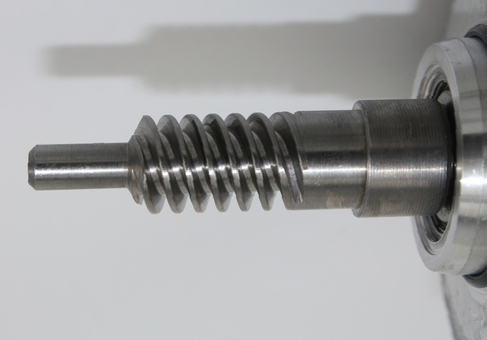

Серводвигатель (сервомотор) и другое электрооборудование. Первый этап проектирования.
Проектирование конструктивных элементов оборудования с использованием переменного тока, исключение – асинхронные двигатели с фазным ротором начинается со статора с учётом результатов электромагнитного расчёта. Определив вылет лобовых соединений, приступают к продольному разрезу механизма. Выбранный способ закрепления сердечника статора в станине определяет длину станины. Размеры вала лучше проверить механическим расчетом исходя из чертежей продольного разреза.
К чертежам оборудования, которое работает на постоянном токе, лучше приступать начиная с якоря. Якорь – вращающаяся часть оборудования. Посмотрев продольный разрез и определив расположение коллектора и вылет лобовых частей. Аналогично уже рассмотренному случаю, осуществляется механический расчёт. В случае наличия аксиальной системы вентиляции принимается во внимание необходимость разместить центробежный вентилятор.
Следующим этапом занимаются неподвижными частями машины, разрабатывается станина с обмотками возбуждения и полюсами. Асинхронные двигатели с фазным ротором обычно прорабатывают с вращающийся части.
Вал
Вал электрического оборудования, например, серводвигателя передает вращающий момент от электродвигателя к приводимому механизму или передаёт вращающий момент от первичного двигателя к соединенного с ним генератору. Масса вращающихся частей оборудования воспринимается валом, также вал воспринимает момент вращения и изгибающий момент передачи. На вал воздействует одностороннее магнитное притяжение, которое возникает при условии наличия неравномерного воздушного зазора.
Вал должен обладать жесткостью в средней части, которая несёт сердечник якоря или ротора, чтобы при эксплуатации прогиб вала не превысил допустимых параметров. Должна быть обеспечена прочность всех поперечных сечений, чтобы не допускать остаточных деформаций при любых нормативных нагрузках, которые предусмотрены при работе. Предполагаемое критическое значение частоты вращение должно быть как минимум на 30% выше рабочего значения.
Как говорилось выше, строим продольный разрез и выполняем механический расчёт и определяем соответствие проектируемого вала всем требованиям. При определении размеров вала сначала находят длины выступающего цилиндрического конца и диаметр. Для этого исходят из момента вращения при номинальном режиме работы оборудования.
В оборудовании с использованием постоянного тока и высотой расположения вала более 355мм, которые эксплуатируются в сложных условиях и испытывают перегрузки, принято использовать валы выступающими концами конусной формы, размеры по ГОСТ 12081 “Концы валов конические с конусностью 1:10. Основные размеры, допускаемые крутящие моменты”.
При диаметре вала менее 100мм следует использовать в основном цилиндрические прокатанные прутки, сталь 45, либо другой марки. Следует обеспечить минимальные переходы между ступенями, чтобы уменьшить трудоемкость обработки и сэкономить на отходах. Для вала большого диаметра аналогично используют сталь 45, применяется прессовка и ковка.